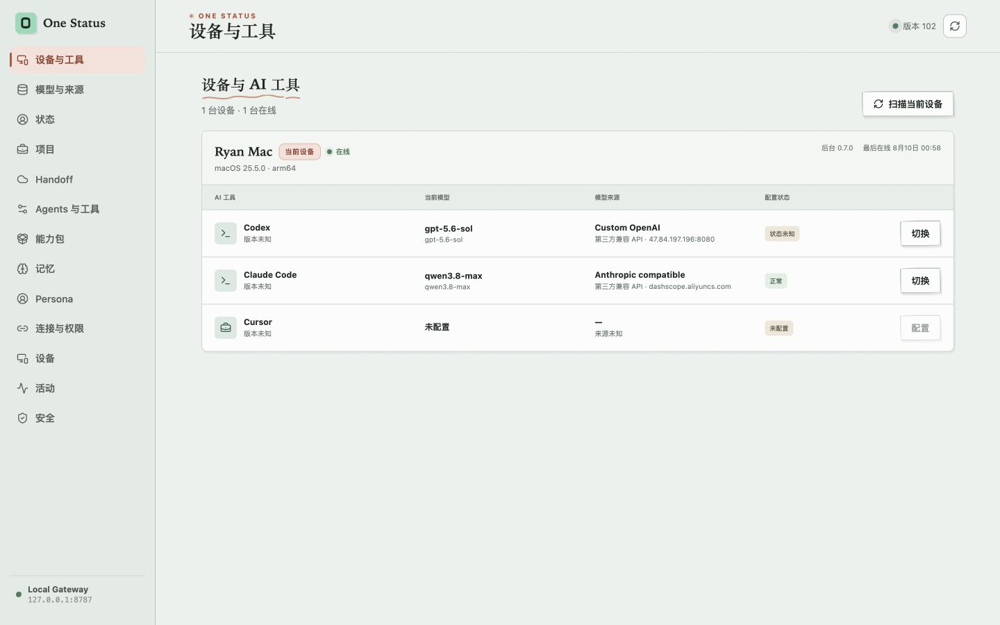

偏好简洁、直接的中文技术回答

查看设备总览Devices在线状态与后台版本
AI ToolsCodex · Claude · Cursor
Models官方 · 第三方 · 本地
Persona加密个人偏好
DEVICE · TOOL · MODEL
每台设备，当前用了什么，一眼看清
v0.7 首页围绕设备、AI 工具、模型来源和配置健康状态组织。后台读取本机 Agent 状态，在线设备立即应用确认后的变更，离线设备保存加密配置意图。
Ryan's MacBook PromacOS · local 0.7.x
在线
AI 工具当前模型模型来源状态
CCodexGPT-5.4OpenAI正常切换
CLClaude CodeClaude OpusAnthropic正常切换
CUCursor未配置—待配置配置
Office Mac minimacOS · last seen 18 分钟前
离线
CCodexGPT-5.4第三方兼容 API待应用查看
CLClaude CodeClaude SonnetAnthropic已同步切换
上方展示跨设备配置流程。查看 v0.7 真实工作台截图
MODEL CONFIGURATION
选择一次，发到指定设备与工具
模型来源、API 协议、Endpoint、Credential 健康状态与配置目标集中管理。
- 01选择模型官方账号、API、第三方兼容、本地服务
- 02选择目标一台或多台设备上的指定 AI 工具
- 03预览并确认保留 MCP、Rules、Skills 等无关字段
- 04应用或排队在线立即执行，离线记录加密意图
- 05验证与恢复报告结果，失败时恢复原配置
pending→applying→applied或failed→rollback
PERSONA SKILL
让个人偏好随时间变得准确
Agent 检测到语言风格、工作习惯、技术偏好、长期目标或明确记忆请求后，通过 persona.record 生成结构化事件。记录在设备端加密，并由用户掌握编辑、删除和类别禁用权。
- 01 Persona Events 保留时间、Agent、项目和置信度
- 02 Persona Profile 合并重复观察并更新次数
- 03 完整原始会话默认留在本机
v0.7 已在 Codex 与 Claude Code 中安装统一 Persona Skill，并通过 E2EE Status 在两端读取同一份 Profile。
JavaScript 项目优先使用 pnpm
Profile updated2 active preferencesLast observed today
HANDOFF · AVAILABLE TODAY
从一台设备的最后一步继续
程序采集 Git branch、commit、dirty state 和测试状态，生成可审计的 Handoff。Secret 扫描与用户确认通过后才会提交并推送。
- ✓ 精确 Git commit 与文件 SHA-256
- ✓ 本机绝对路径按设备独立保存
- ✓ Continue with Codex / Claude Code
# One Status Handoff
Current Goal
Validate Open and Continue
Completed
✓ OAuth Gateway
✓ Encrypted Status sync
✓ Public Homebrew release
Next
→ Continue on Mac B
Git State
branch: main
commit: 11d9e9fa9de3
secretScan: passedDOWNLOAD · GITHUB
选一种方式，开始使用
桌面 App 自带本机后台服务。CLI、MCP 和自托管服务也可以独立安装。
推荐
One Status Desktop
安装后从 Applications 或开始菜单启动，独立窗口直接展示 GUI。当前下载版本为 v0.7.0。
SHA-256 校验
一条命令安装桌面版
脚本从 GitHub Release 下载产物，并使用同一 Release 的 SHA256SUMS 验证。
macOS / Linux
curl -fsSL https://niyuxuan782.github.io/one-status/install.sh | bash
Windows PowerShell
irm https://niyuxuan782.github.io/one-status/install.ps1 | iex
macOS App + CLI
Homebrew
Cask 安装桌面 GUI；Formula 安装 CLI、MCP 与常驻本机服务。
Desktop App
brew tap niyuxuan782/tap
brew install --cask niyuxuan782/tap/one-status
CLI + Service
brew tap niyuxuan782/tap
brew trust --formula niyuxuan782/tap/one-status 2>/dev/null || true
brew install --formula niyuxuan782/tap/one-status
brew link --overwrite --force niyuxuan782/tap/one-status
brew services start niyuxuan782/tap/one-status
Node.js 22+
CLI / MCP
适合开发者、自托管节点和无桌面环境；安装器会同时安装原生 Device Sidecar，并接入 Codex 与 Claude Code。
Install CLI
curl -fsSL https://niyuxuan782.github.io/one-status/install.sh | bash -s -- --cli
PRIVATE BY DESIGN
服务器无需读取你的工作上下文
Persona、Preferences、Task State 和配置意图在设备端加密。API Key 与 OAuth Token 留在 Permission Vault，Agent 只获得被允许的动作。
Device AEncrypt locally
→
CiphertextSync intent & state
→
Device BDecrypt and apply locally
OPEN CORE
本地核心开放审计
Desktop、CLI、MCP、加密实现和 Sync API 使用 Apache-2.0。模型配置 Sidecar 的开发实现已固定 CC Switch 3.19.2 来源 commit，并随 v0.7 原生产物保留 MIT notice 与版权声明。